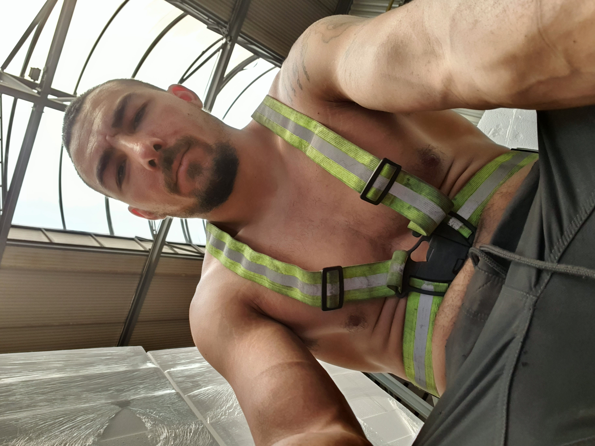

|  | Jonathan Miller Little |
I am a United States citizen that has lived, studied, and worked in 3 different countries: Serbia, the US, and the Czech Republic. This has not only gifted me with being fluent in 3 languages, but has also broaden my perspective and understanding of the world and life itself through different cultures and norms. This has made me a specialist when it comes to learning quickly, addapting simultaneously, and integrating as if I was naturally born that way.
Freelancing
Fire Sprinkler / Pipe Fitter (April 2019 - Curernt)
| Dates | Work | Company |
|---|---|---|
| April 2019 - Current | Fire Sprinkler/Pipe Fitter | Freelancing |
| Aug. 2016 - April 2019 | SPCC & Graphics Specialist | Astra Environmental |
| May 2015 - July 2016 | Spill Plan Control & Countermeasure | Enviroclean Services |
| Sept. 2015 - May 2015 | Environmental Engineering Technician | TEEMCO |
| AutoCAD | ⭐⭐⭐⭐ | Power Tools | ⭐⭐⭐⭐ | |
| HTML(5) | ⭐⭐⭐ | Clean&Jerk | ⭐⭐⭐⭐⭐ | |
| Microsoft Office | ⭐⭐⭐⭐⭐ |